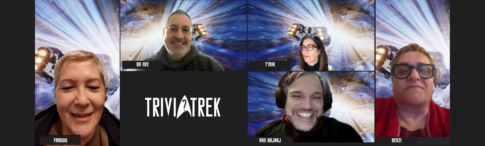

Inizio registrazione.
Anche questa volta, la reunion sarà virtuale e, come da accordi, apro il canale alle 21.15. Subito si uniscono T'Mik e Frruuu a stretto giro.
Renzi si collega alle 21.30, appena staccato da lavoro. E ci accompagnerà lungo il tragitto che, coin vari mezzi, la porterà, appunto, dal lavoro a casa.
Poco dopo anche Van Bajark ci raggiunge, virtualmente, dal 'fresco' Canada.
Unica assente, giustificata, Rael: a quanto pare il nostro CTO h adeciso di seguire le orme di illustri predecessori dandosi all'archeologia: in particolare,
era impegnata in una non meglio specificata Congerenza sugli Etruschi.
D'apprima, come di consueto, chiacchiera del più e del meno (a tratti appassionatamente) di varie questioni, anche spinose. Nell'ordine:
- fremente attesa per la nuova stagione di SNW in imminente uscita;
- digressione sulla pericolosità delle oche (e degli orsi) canadesi che a quanto pare somno talmente aggressive da aver causaoto anche dei morti;
- Renzi ha attivato un nuovo servizio di info atac fornendo assistenza sulle corse e le coincidenze dei mezzi pubblici romani ad una passante;
- che fine ha fatto Peter Jacket? Non si hanno sue notizie: auspichiamo che, leggendo delle nostre nuove avventure e reunion (appena saranno pubblicate sul ISTM) gli venga voglia dir contattarci e tornare a bordo. Da parte nostra lo auspichiamo: 'Ti aspettiamo a braccia aperte!'
- Lea, la gatta di T'Mik, miagola reclamando il suo cibo;
- durante il qiuz, senza spoilerare troppo, mi si fa notare che, ovviamente, dopo il modulatore trombico… è ovvio che si passi al calibro gravidico;
- nel frattempo Renzi ci rivela di aver modificato il comanmdo di attivazione della sua Alexa in computer: va da sé che ogni volta che, guardando un episodio o un film di Strar Trek in cui un personaggio interroga il computer di bordo, la domotica del nostro CSO si attiva con risultati più o meno esilaranti. Confesso che anche io, tempo fa, ho commesso lo stesso errore, con risultati analoghi;
- nuove rivelazioni da Canada: anche le tartarughe, aquanto ci rivela il nostro XMO da oltre oceano, sono assassine…;
- inoltre: veniamo a sapere che i Canadesi, sono strana gente: non studiano la grammatica inglese a scuola e, consegentemente, commettono errori/orrori in vari ambiti linguistici, sia scritti che orali; inoltre, ritengono che il loro 'francese' abbia una origine del tutto diversa e indipendente da quallo che si parla Francia. Queste due informazioni lasciano tutti alquabnto perplessi (!);
- lancio della zucchina… in offerta fanno pena! tubero viola/crema rutabaca.;
- escursus verdure canadesi… zucche fagiolini, broccoli, carote. Zucchine surgelate più care delle fresche. Patate a bizzeffe. Export in USA da Prince Edward island-
Esaurito il doveroso giro di saluti, pettegolezzi, commenti e chiacchiere di rito, si passa al clou della Reunion, il momento ludico: la rivincita del TriviaTrek. Stavolta sono stato un po' più 'cattivo' con le domande che, lo ammetto, stavolta sono state particolarmente difficili.
Il primo turno di gioco si conclude con T'Mik a quota 1000 punti e tutti gli altri a 500: solo la CMO ha indovinato.
Nonostante l'inizio incerto, è il nostro amato sasso, l'XO Frruuu, ad aggiudicarsi la vittoria con un totale di ben 3600 punti.
Seconda classificata la dottoressa T'Mik con 3100 punti.
Sul podio anche Renzi, a brevissima distanza, che totalizza 3050 punti.
Medaglia di legno all'XMO Van Bajark che si ferma ad appena 2550 punti.
Proclamata e adeguatamente festeggiata la vincitrice con tutti gli onori, segue un'ulteriore mezz'ora abbondante di allegre chiacchiere, commenti a caldo e verifica delle informazioni sul database di bordo. Quindi ci salutiamo con un impegno: contattare il "Comando di Flotta" dello STIC per riprendere le avventure dell'equipaggio della USS Afrodite da dove le avevamo lasciate.
Fine registrazione.
GM Da Nee
XSO
USS Afrodite NCC-1863
